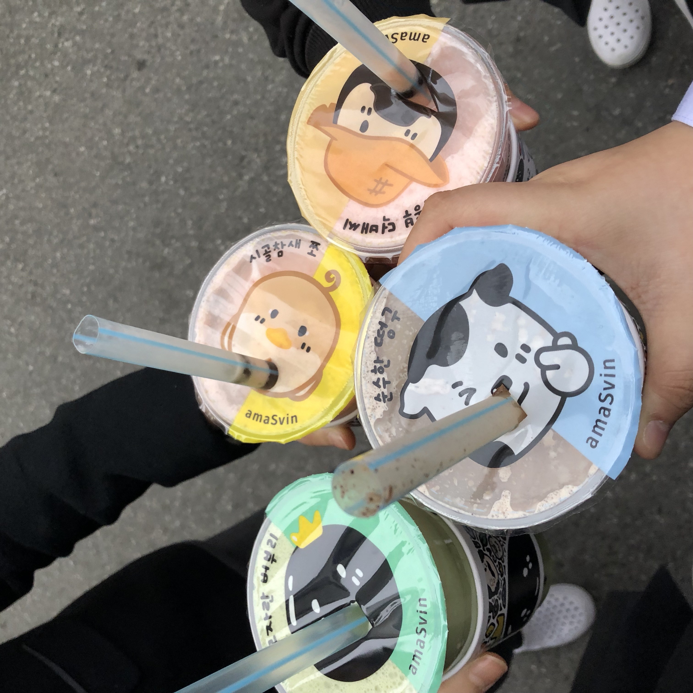

고시촌 미식회
아마스빈

아마스빈은 고시촌에 위치한 버블티 전문 카페입니다..
커피, 버블티, 스무디 등 다양한 메뉴가 있습니다.
쿠폰을 주어서 도장을 모아 나중에 할인 등을 받을 수 있습니다.
토핑은 코코펄, 타피오카펄, 알로에, 젤리펄이 있습니다.
사람이 밀리면 소요시간이 조금 소요됩니다.
저의 추천메뉴는 하동녹차오레오에 코코펄입니다.
친구들과 다르게 나온 캐릭터를 구경하는 맛도 있습니다.
주소 : 서울시 관악구 신림동 1532-20
고시촌 미식회 별점:
★★★★★
▲ 위 사진은 누르시면 더 다양한 메뉴를 보실 수 있으십니다.
 고시촌 미식회
고시촌 미식회